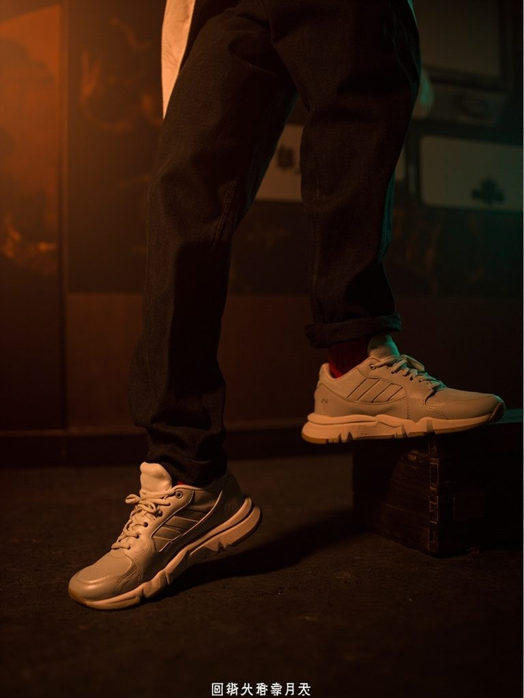
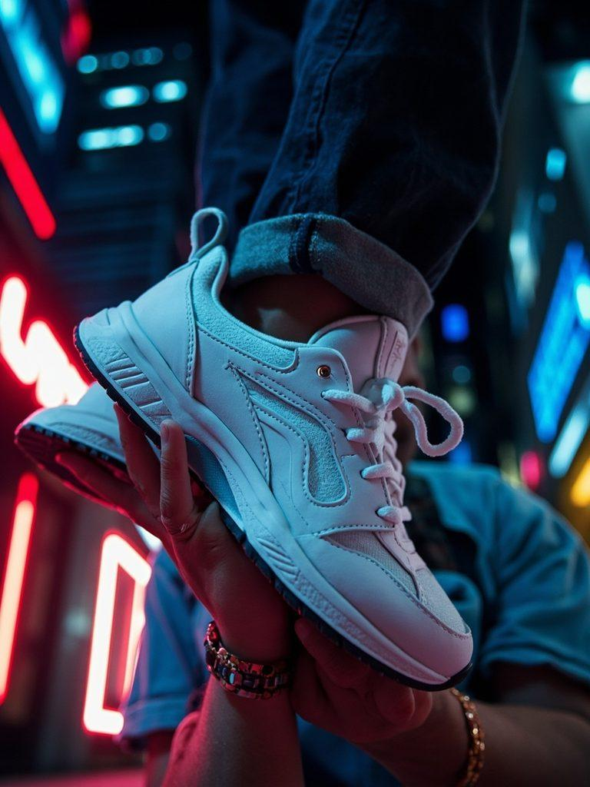
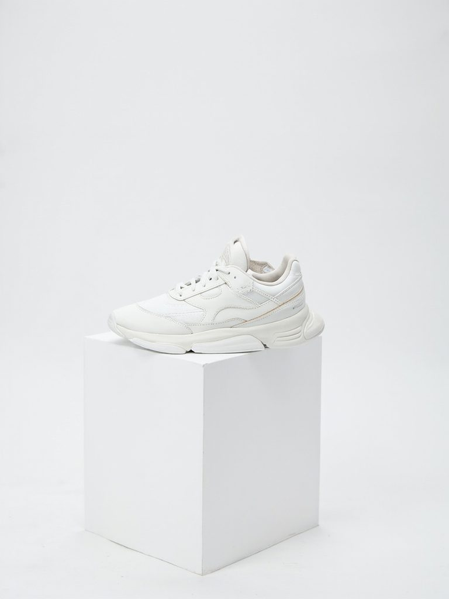

See what it does
The same sneaker, advertised to three different taste worlds — generated live by the agent.



Personas
Click a persona to regenerate just their ad — or generate all three for the side-by-side demo.
Ad gallery
The same product, seen through three different tastes.
🎨
Nothing generated yet.
Hit “Generate all three ads” to watch the agent work.
Agent decision trace
Perceive → reason → generate → self-check. Every ad leaves a trail.
Generate an ad and the agent's reasoning will appear here.